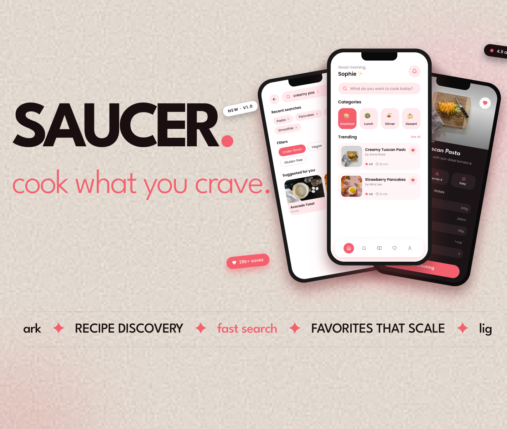
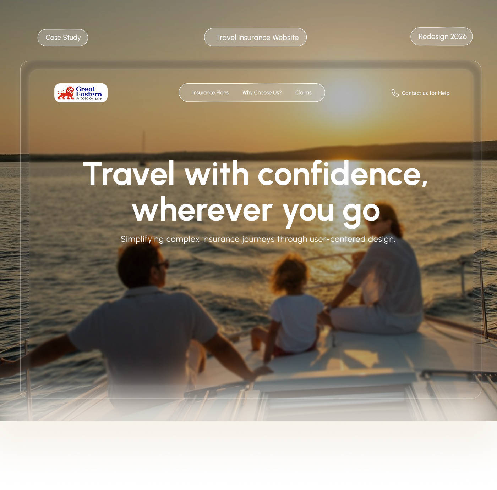
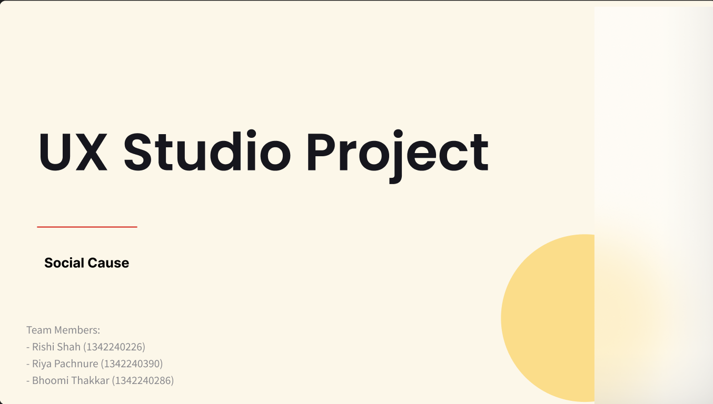
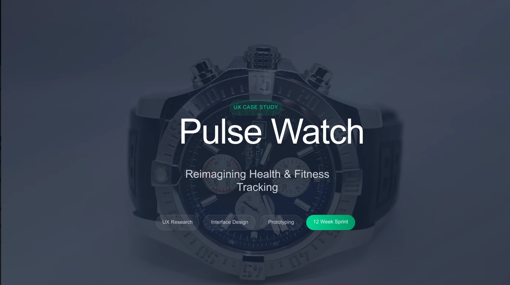
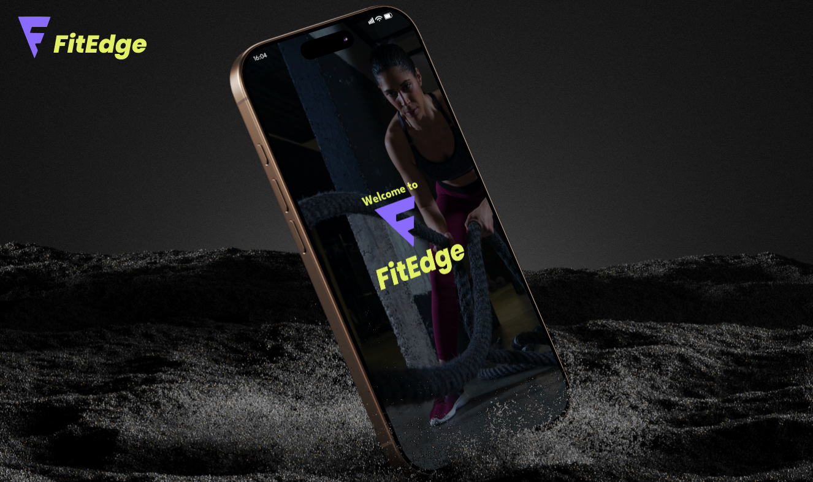

Independent designer / student — India
Rishi Shahmakes thingsworth looking at.
Digital experiences, identities, and little systems with a pulse.
SCROLLTO WORK ↓
Digital design ✦ Creative direction ✦ Product thinking ✦ Front-end experiments ✦
Digital design ✦
Selected work (01—10)
Playful and precise.
Always made to move.
Websites &
Landing pages
Selected landing-page explorations.
Click a screen to open its Figma prototype.
UX case studies (06—10)
Case
Studies
Research-led product stories, interface systems, and prototypes. Click a cover to open the full Behance case study.

06 / Mobile appSaucerOpen Behance case study →
07 / Website redesignFintech RedesignOpen Behance case study →
08 / UX studio projectNuccadOpen Behance case study →
09 / Smartwatch UXPulse WatchOpen Behance case study →
10 / Fitness appFitEdgeOpen Behance case study →You’ve only seen the shortlist
There’s more
inside.
Open the folder to explore my Behance case studies, GitHub builds and Figma experiments.
Click the folder ↘Code
Experiments Open the work archive


Fresh from GitHub
Live repositories, pulled directly from my workbench.
Collecting recent repositories…
About Rishi (02)
I'm Rishi, a designer and student turning curious ideas into memorable screens and useful experiences.
Currently studying, observing, and making. I enjoy a sharp grid, unexpected type, and the moment a prototype starts to feel alive.
Let's work together ↗RS
Experience & education
Learning by making, contributing, and showing up for the design community.
Volunteer / MIT-WPU Design XPO 2026
Design XPO 2026
Contributing to a celebration of creativity, innovation, and design thinking in Pune; engaging with students, professionals, interactive exhibits, and conversations around meaningful user experiences.
Bachelor of Design / UX & UI Design
MIT World Peace University
Building a foundation in user-centred product thinking, interface design, and visual systems. Active in the UX/UI Design Society.
Honors & awards
03
MIT World Peace University / February 2026
3rd Rank Holder
Recognised for outstanding first-year academic performance in the B.Des UX/UI Design program and a consistent level of excellence across coursework and design projects.
B.Des UX/UI